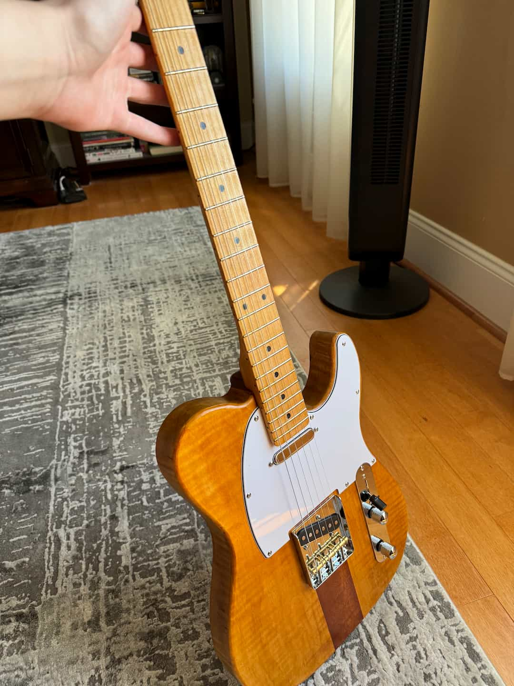

Using youtube guides and some cheap chinese pickups, I made myself an electric guitar. It has been dubbed "The Electric Knopfler".
The body itself is hard maple with a mahogany centerline. Standard telecaster routes were used for the pickups and strings, etc.
